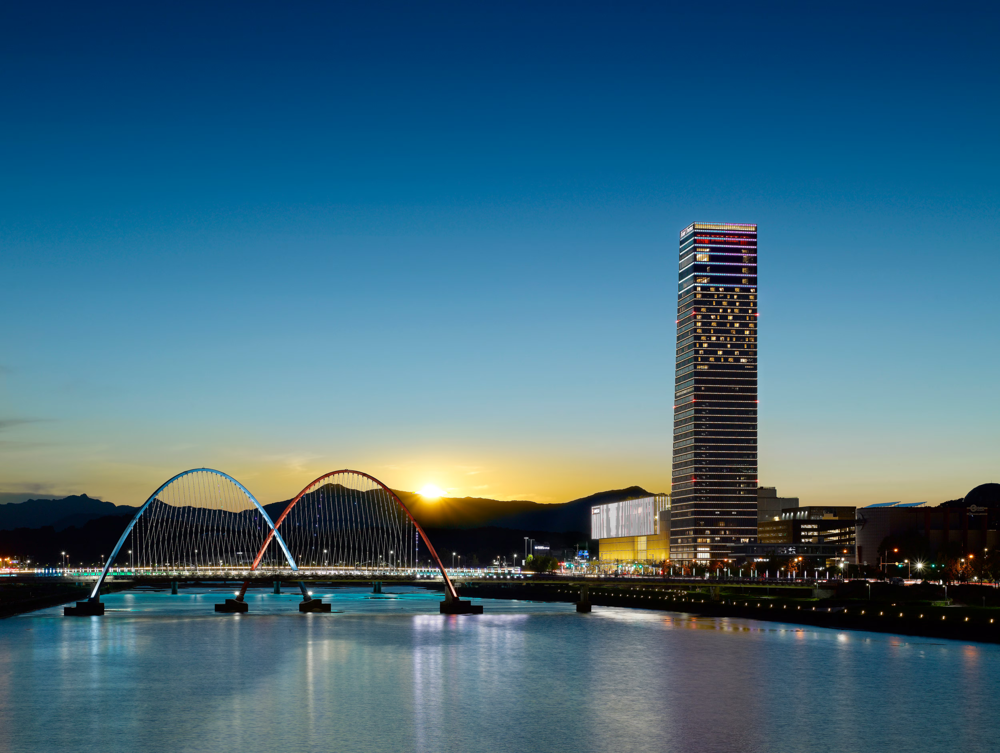
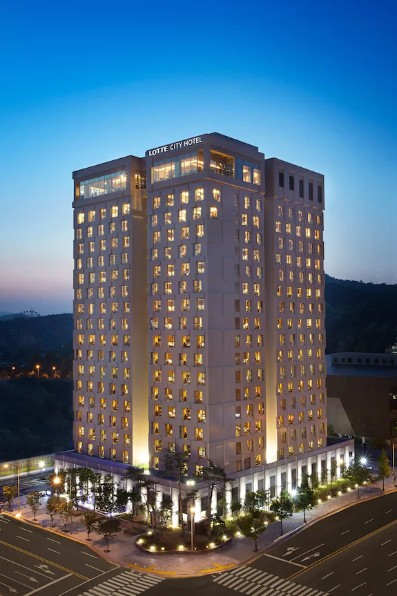
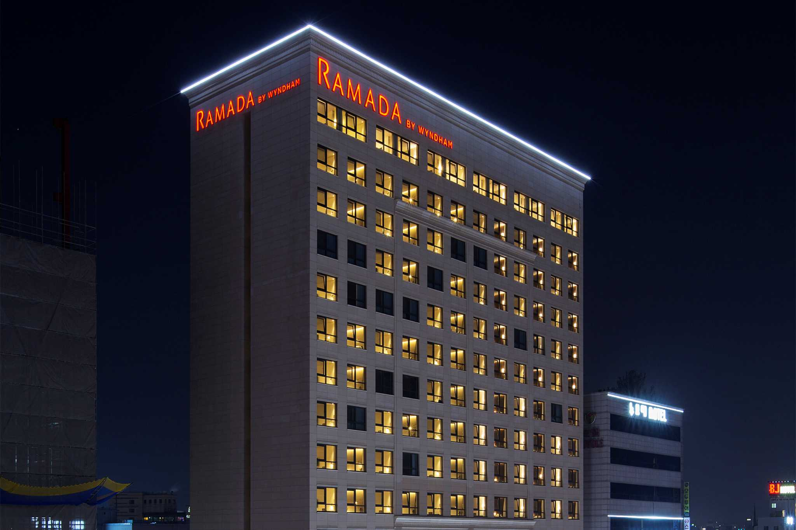
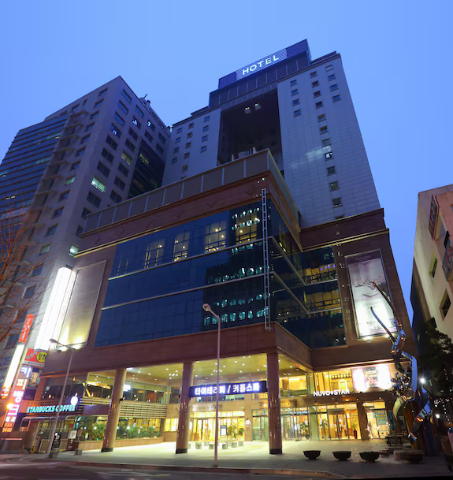
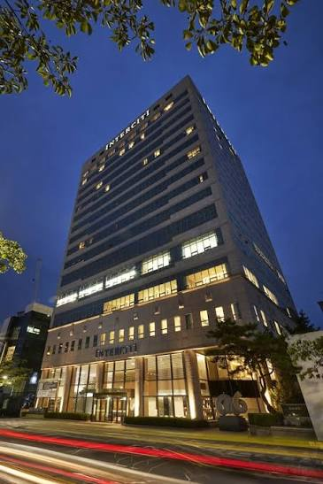
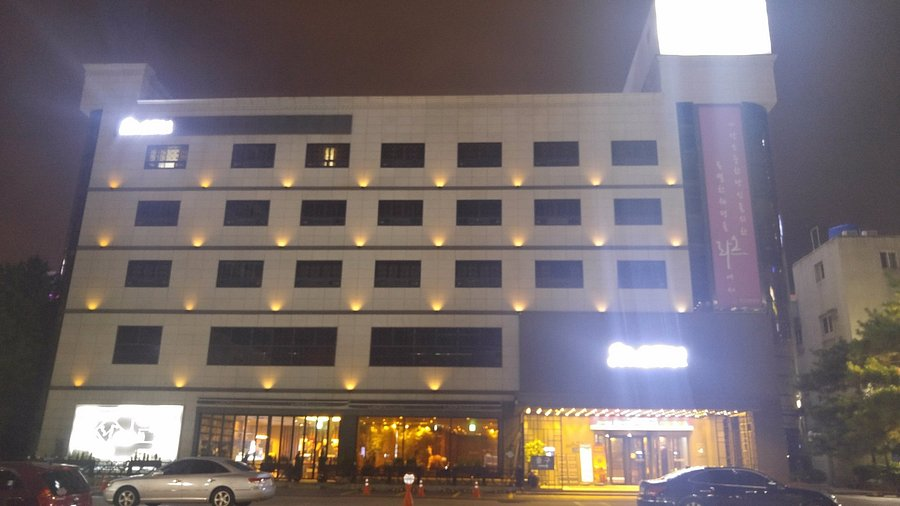
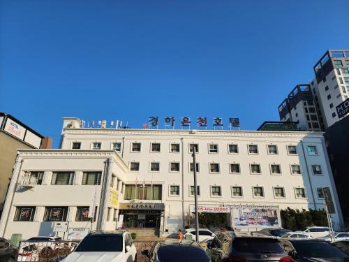

대전의 숙박
힐링의 온천 도시이자 교통의 중심 대전에서 편안하게 머물 수 있는 추천 숙소 리스트입니다.

대전 신세계 아트앤사이언스와 연동된 대전 유일의 5성급 호텔입니다. 갑천과 도심이 한눈에 내려다보이는 탁 트인 전망과 최고급 인테리어로 대전에서 가장 럭셔리한 휴식을 선사합니다.

대전 컨벤션센터(DCC)와 엑스포 과학공원 바로 앞에 위치한 현대적이고 세련된 호텔입니다. 갑천이 내려다보이는 스카이 라운지에서 즐기는 조식과 대전 도심 접근성이 뛰어나 비즈니스와 관광 모두에 최적입니다.

유성온천의 중심에 위치하여 편리한 대중교통 인프라를 자랑하는 글로벌 호텔 브랜드입니다. 깔끔하고 현대적인 객실 인테리어와 가족 친화적인 패밀리 트윈 룸이 완비되어 여행객들에게 큰 사랑을 받고 있습니다.

대전의 행정·경제 중심지인 둔산동 정부청사 인근에 위치한 대표적인 가성비 비즈니스 숙소입니다. 깔끔하고 표준화된 객실 서비스와 모든 투숙객에게 제공되는 무료 조식 뷔페로 출장객들에게 최상의 만족을 제공합니다.

유성천 변에 자리 잡아 유성온천의 풍부한 천연 온천수를 전 객실과 전용 사우나에서 직접 만끽할 수 있는 전통 있는 호텔입니다. 넓고 쾌적한 객실 공간과 전문적인 컨벤션 시설이 특징입니다.

감각적인 현대식 디자인과 편안한 휴식 공간을 제공하는 유성구의 부티크 호텔입니다. 유성온천 야외 족욕체험공원과 인접해 대전의 온천 문화를 만끽하고 도심 속 힐링을 즐기기에 좋은 최적의 숙소입니다.

대전 유성온천 지구에서 역사 깊은 온천 전문 호텔로, 객실 내에 개별 온천탕이 완비되어 가족 단위 투숙객이 온전한 온천 힐링을 누릴 수 있습니다. 전통 온돌 객실과 온천수를 활용한 사우나가 큰 매력입니다.